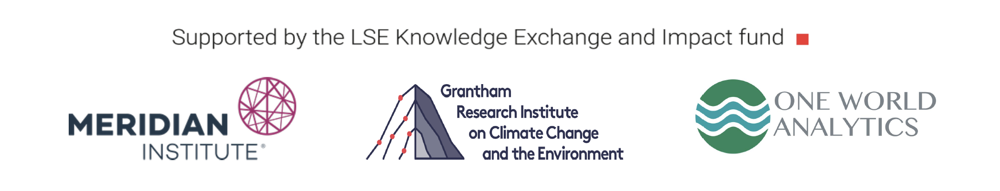

Key Resources
This page provides resources for the LSE Roundtable on Global Biodiversity Finance and Digital Sequence Information.
Parties to the Convention on Biological Diversity have decided to establish a multilateral mechanism on digital sequence information including a new fund. COP16 in Cali, Colombia in October 2016 will make key decisions about the size of the new fund, who will contribute, and how the fund will be organised in terms of contributions and disbursements. Many challenging questions remain and Parties will need to clarify the options available to them in order to take a decision by consensus on ways forward.
What Are We Talking About?
In essence, digital sequence information refers to the genetic make up of an organism in digital form arising from the sequencing of organisms and the rise of genomics, proteomics and other omics. In the scientific community, digital sequence information would commonly simply be called genetic sequence data. The dramatic expansion of the sequencing of organisms in the early 21st Century has led to exponential growth in the volume of sequence data (see Shatz et al 2015 Big Data: Astronomical or Genomical). That data is economically important for a range of industry sectors including biotechnology, agriculture and health and pharmaceuticals. That data is increasingly important for next generation technologies combining biology and artificial intelligence such as Google AlphaFold for protein modelling and synthetic biology or engineering biology. The data may be accessed through public domain databases such as those operated by the International Nucleotide Sequence Database Collaboration (the US, Europe and Japan) or is stored in an unknown number of private databases.
The Policy Debate
In 2010 Parties to the Convention on Biological DIversity adopted the Nagoya Protocol on Access to Genetic Resources and Benefit-Sharing Arising from the Utilization of Genetic Resources. The Protocol arose from concerns expressed by developing countries about the misappropriation (“biopiracy”) of genetic resources and traditional knowledge in areas such as medicine and agriculture in the context of the increasing globalisation of intellectual property rights, notably patent rights, under the WTO TRIPS Agreement. The Nagoya Protocol requires that those seeking to access genetic resources must obtain the prior informed consent of the relevant government and establish a contractual agreement setting out the terms of benefit-sharing. In an important advance in international environmental law, additional requirements are included in the Protocol to promote respect for the rights of Indigenous Peoples and Local Communities as the stewards of global biodiversity.
To date, 141 governments and the European Union have ratified the Nagoya Protocol. However, the Nagoya Protocol is silent on the question of whether digital sequence information is covered. This leaves it a matter for governments to decide whether it is covered under national legislation or not and whether benefit sharing is required. On balance and in very broad terms, in the period to 2020 developing countries adopted the view that DSI is covered and developed countries adopted the opposite view.
The Nagoya Protocol represents a bilateral approach to access to genetic resources and benefit sharing because it requires a bilateral agreement between a ‘provider’ of the genetic resources (typically a government and may involve indigenous peoples and local communities) and a ‘user’ (a company or university). This approach is grounded in the sovereignty of countries over their natural resources. However, the bilateral contract approach led to substantive criticism in favour of a multilateral approach during the negotiation of the Nagoya Protocol by economist Joseph Vogel and Manuel Ruiz Muller and, to a lesser degree by Oldham. Following the adoption of the Nagoya Protocol criticism has mounted from the private sector and some members of the science sector of the inefficiency and bureaucracy of this Nagoya Protocol. Debates on digital sequence information led Parties to increasingly favour a multilateral approach to digital sequence information with key tensions existing between those who adopt the position that the Nagoya Protocol and multi-lateral mechanism can operate together and those, notably from some sectors of science and industry, who argue that the Nagoya Protocol must be ‘switched off’ in favour of a purely multilateral approach to both physical and digital genetic resources (see Halewood et al 2023 below). COP15 decision 15/9 did not resolve these conflicting views but did agree to establish a multilateral mechanism for the sharing of the benefits from digital sequence information based on set of criteria as follows.
- Be efficient, feasible and practical;
- Generate more benefits, including both monetary and non-monetary, than costs;
- Be effective;
- Provide certainty and legal clarity for providers and users of digital sequence information on genetic resources;
- Not hinder research and innovation;
- Be consistent with open access to data;
- Not be incompatible with international legal obligations;
- Be mutually supportive of other access and benefit-sharing instruments;
- Take into account the rights of indigenous peoples and local communities, including with respect to the traditional knowledge associated with genetic resources that they hold;
Decision 15/9 also commissioned three studies:
a) to review lessons learned from other funding mechanisms (available here Lessons Learned from Other International Funding Mechanisms )
b) A study to analyse and model the extent to which a multilateral mechanism for benefit-sharing from the use of digital sequence information on genetic resources
c) A study on the options for revenue-generating measures at different points along the value chain, the feasibility of their implementation and their costs relative to their potential revenue.
Revenue Generation Models
A range of studies and proposals have emerged for revenue generation measures for the digital sequence information fund. With rare exceptions, these studies do not contain numbers. This in part reflects underlying difficulties in the valuation of the subject matter and a lack of engagement with economists. However, growing engagement with economists elsewhere under the Convention such as the work of the expert group on resource mobilisation, the BIOFIN initiative in connection with National Biodiversity Finance Plans and the transition to natural capital accounting within the wider UN system suggests that there is ample scope for contributions from economists.
Existing proposals for models mainly take the forms of sketches they can be described in broad terms as follows:
- A public domain model that switches off existing bilateral arrangements on benefit-sharing for physical genetic resources (optional) and digital sequence information in return for access to an (indeterminate) fund.
- A percentage of sales of individual commercial products that have been developed using digital sequence information
- X % of turnover, profit or value of exports from relevant sectors substantially reliant on digital sequence information
- Charges against the use of the biodiversity and life science infrastructure using cloud pricing models (Big Data and Artificial Intelligence).1
- A contribution of 1 % of retail sales of biodiversity-based products sold in developed countries (the Africa Group)
- Other measures such as a royalty rates on patent holders (as advanced in the literature by Vogel and Muller), biodiversity bonds, biodiversity tokens, milestone payments (such as when products hit sales targets) or debt-swaps.
- Other methods that have not been considered in the CBD context includes relying on technological means of mapping aggregate usage of DSI using a range of factors comprising ‘utilization’ indicators including publications, patents and development of products (such as in the BBNJ agreement)
The recent Co-Chairs reflection paper in paras 10(a) and 10(b). This is summarised in a press release accompanying the Co-Chairs reflection paper as follows:
Potential trigger points for contributions identified by the Co-Chairs:
When a product developed through the use of DSI is placed on the market, users would be expected to contribute.
When revenue is generated in a sector highly dependent on the use of DSI, companies would be expected to contribute a proportion of their total revenue generated.
These two options correspond with points b and c respectively. The press release states ‘…that sectors that depend most on DSI generate “one to a few trillion dollars annually” and even 0.1% of $1 trillion would yield $1 billion for the global fund; 1% would amount to $10 billion.’
The Co-Chairs reflection paper is attempting to narrow the negotiation space and is focusing on contributions from industry sectors. It is currently unclear how Parties and industry sectors will respond to this proposal.
Where Are We Now?
COP15 gave responsibility for the further development of the multilateral mechanism to an open ended working group with the expectation that it will become operational from COP16 onwards. The first meeting of the working group was held in Geneva in November 2023 and the report is here. The second meeting will be held in Montreal in mid-August and the documents all are available here.
Due to delays in commissioning the studies were effectively rolled into one. The studies have not been made public at the time of writing following a call for peer review. However, an Executive Summary of the studies made public prior to addressing peer review comments is available here. It is understood informally that a very large number of peer review comments were submitted.
In an important development the Co-Chairs have written a ‘Reflections’ paper that seeks to set out their thinking on where there are potential areas for convergence.
In addition to the formal CBD processes a range of informal meetings have been held in various regions around the world as part of the process of building consensus on possible outcomes at COP16. The LSE Roundtable appears towards the end of that process.
Where are We Going?
COP16 is expected to arrive at a decision. A decision under the Convention is not legally binding as such except in the softer sense that the Convention is legally binding. This is a very different situation to the negotiations on genetic resources and DSI under the High Seas Treaty in 2023 where UN member states agreed to include a range of revenue generation options for benefit sharing under a special fund. In the first instance contributions will be made by State Parties in the initial phase.
Background Framing Documents
If you are new to the CBD and would like to understand the context for the debates on DSI take a quick look at these as the wider framework.
- The Global Biodiversity Framework (The Goals and Targets to 2030 providing context on DSI)
- The Resource Mobilisation Strategy (The decision on mobilising upto $200 billion a year)
- DIgital Sequence Information (COP15 decision establishing a multilateral mechanism)
The Secretariat maintains a page on the theme of digital sequence information here. An updateable DSI resource page will show recent publications and documents (that is open for submissions to registered users, registration is easy and free).
Biodiversity Finance and DSI
- Exploration of the biodiversity finance landscape (April 2024 Secretariat review of the global landscape). This document informs the ongoing debates on Resource Mobilisation.
- Lessons Learned from Other International Funding Mechanisms (Secretariat Study for DSI)
- Executive Summary of DSI Studies (Secretariat Commissioned Studies arising from Decision 15/9, the executive summary is of the pre-peer review version of the studies).
Studies
A number of studies have been prepared or commissioned by different actors to inform the discussions. This list is by no means exhaustive. Some noteworthy studies include:
Morgera, Switzer and Geelhoed 2019 Study for the European Commission on ‘Possible Ways to Address Digital Sequence Information – Legal and Policy Aspects’. This provides legal analysis and also provides informed analysis around benefit sharing mechanisms. See also Switzer’s study for the Secretariat for lessons learned from funding mechanisms.
Oldham 2020 Study for the European Commission on Digital Sequence Information: Technical Aspects followed by Oldham and Kindness 2022 Sharing Digital Sequence Information. Both papers use an SES based approach to the analysis of options and ultimately focus on infrastructure based revenue generation using cloud computing pricing models.
Sholz et. al. 2020 Finding Compromise on ABS & DSI in the CBD: Requirements and Policy Ideas from A Scientific Perspective. Evaluates a variety of options and favours a UNITAID inspired micro-levy for sequencing machines and reagents.
Vogel et al 2021 Bounded openness: A robust modality of access to genetic resources and the sharing of benefits. See also earlier work by economist Joseph Vogel including 1994 Genes for Sale the 2000 The Biodiversity Cartel. See also Ruiz Muller 2015 Genetic Resources as Natural Information.
Oldham, Thambisetty and Chiarrolla 2023 Digital Sequence Information in the UN High Seas Treaty: Insights from the Global Biodiversity Framework-related Decisions. Argues for multiple revenue generation options under the New High Seas Treaty including aggregate use indicators linking across to natural capital accounting. Elaborated in greater detail for G77 +China here.
Halewood et al 2023 New benefit-sharing principles for digital sequence information (paywall). Policy Forum in Science arguing for delinking access from benefit-sharing, radical simplification, a broad base for contributions across biological data and harmonization of the approach across international instruments.
Hampton et al 2023 ‘Equity’ in the Pandemic Treaty: The False Hope of ‘Access and Benefit-Sharing’. A substantive critique of the concept of access and benefit-sharing with respect to the Pandemic Treaty.
Oldham and Thambisetty 2024 The Pandemic Access and Benefit Sharing System: Four Elements of a Trusted System. Uses company and trade classification systems to identify options for securing contributions from companies.

Footnotes
Advanced by Oldham (2020) and Oldham and Kindness (2022). For literature on cloud pricing models see Wu et al 2019 Cloud Pricing Models: Taxonomy, Survey, and Interdisciplinary Challenges and on cloud storage pricing see Khan et al 2024 Cloud storage cost: a taxonomy and survey.↩︎